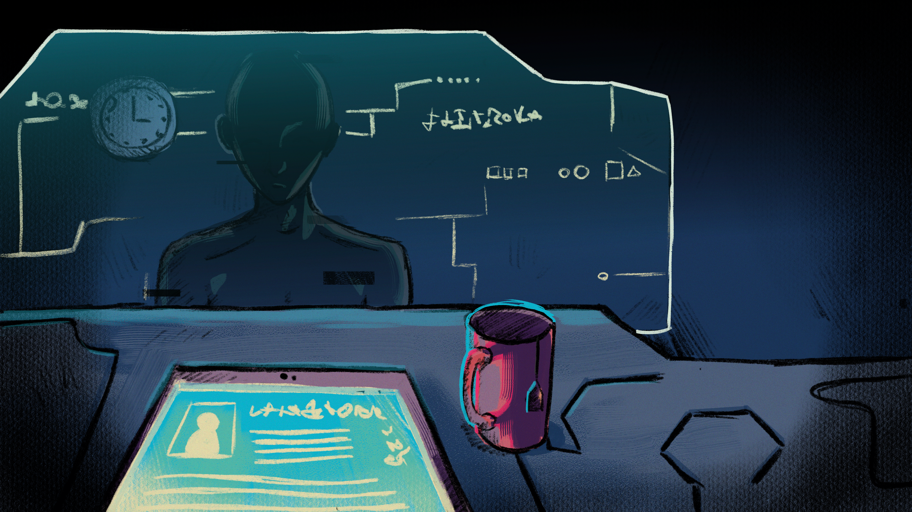
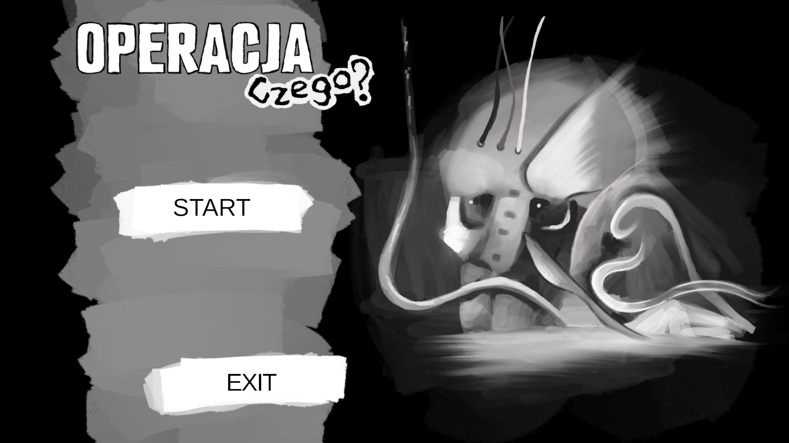
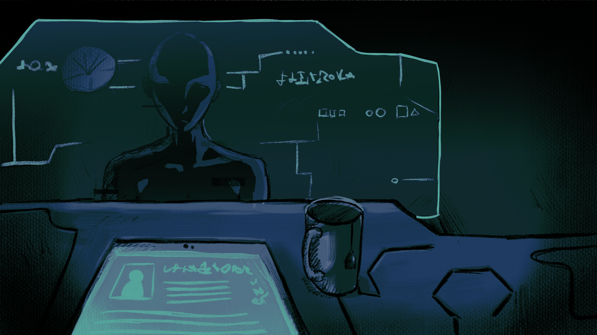
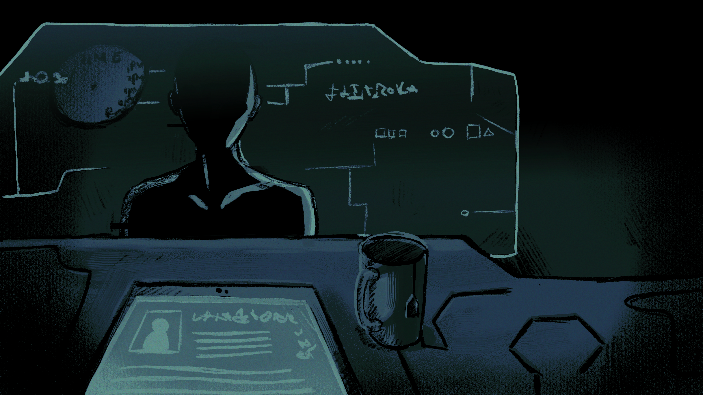

Phase 01
Lucid Beginning
The operating room is bright, the clock functions normally, the interrogation goes smoothly, and the operation mechanics are straightforward and easy to follow.

A 24-hour game jam project exploring Alzheimer's disease through the failing memory and worsening performance of a surgeon.
Stepped into a role of Narrative Designer and Writer, I focused on capturing a once successful surgeon falling for Alzheimer's disease.
Entering a 24-hour jam deadline required converting high-level theme constraints into a narrative loop within the first two hours.
"A Perfect Vacuum - A Collection of Reviews of Non-Existent Books" - as it is a pretty abstract concept, I tried to put it into a more concrete narrative framework as the clock was ticking.
I rejected standard "escape rooms" or classic hospital simulators, choosing instead to explore more narrative aspects of the surgeon archetype and spieced it up with a massive ailment (as I interpreted the perfect vacuum): making the high-stakes professional unreliable to himself becasue of his illness.
A narrative thriller tracking a skilled ripperdock surgeon suffering from advanced, hidden Alzheimer's - where player UI and memory decay in tandem with the character's mind.
To represent Alzheimer's disease both mechanically and visually, I co-created a system where time is running out and reality slips away. As the story progresses, the interrogation and operating rooms grow increasingly darker, and the clock melts, serving as a metaphor for the patient's failing grasp of time. It also references how people with this illness progressively struggle to draw familiar items from memory, most notably a clock.
This atmospheric deterioration directly impacts player agency: the surgeon performs tasks with increasing difficulty, misremembering tools and forgetting procedures, culminating in a devastating mistake during the final operation.

The operating room is bright, the clock functions normally, the interrogation goes smoothly, and the operation mechanics are straightforward and easy to follow.

Lighting dims noticeably as the clock begins to distort, symbolizing memory slips and confusion. Dialogues become increasingly surreal, and characters' recollection of past events feels subtly wrong.

Deep shadows envelop the room, vision blurs, clock has nearly melted off the wall. The dialogues are abstract, interrogation answers seem out of place but still somewhat familiar. It seems that the hidden layer of the story behind our character starts to flood the once perfect mind, our character is about to lose everything he had.
Below is an excerpt from a dialogue between our surgeon and a frequent clinic regular. In this scene, the surgeon is already in early state of cognitive decline, mixing up basic facts, and struggling to maintain professional composure despite the patient's familiar presence.
Working on Operation of What showed how environmental and UI degradation (darkening rooms, melting clock) can effectively convey complex emotional and medical conditions like Alzheimer's without heavy exposition, I learned to rely on subtelty.
2. 24-Hour Jam Scoping DisciplineUnder a strict 24-hour deadline, focusing purely on a single, strong narrative mechanic, the progressive failure of the player's tools allowed me to deliver a cohesive and impactful emotional punch.
3. Subverting Familiar MechanicsI learned how to tell a story based on discovering deeper layers of the narrative as it progresses, and showing it in different ways by breaking established loops, as the narrative culminates at the end, complemented by a deeper emotional storyline that unfolds between levels, while layered storytelling spills through the character's reflective monologues during stage transitions.